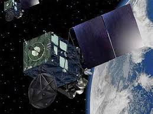

Philippine Weather Satellite
1 / 4
Super HD
2 / 4
2D resolution
3 / 4

Negative resolution
4 / 4

Infrared resolution
Enhanced Satellite for Philippines Infrared imagery is useful for determining clouds both at day and night. Colder objects are brighter and warmer objects are darker. It displays the weather systems and patterns that may affect your area.
Japanese weather satellite, the 8th of the Himawari geostationary weather satellites operated by the Japan Meteorological Agency.